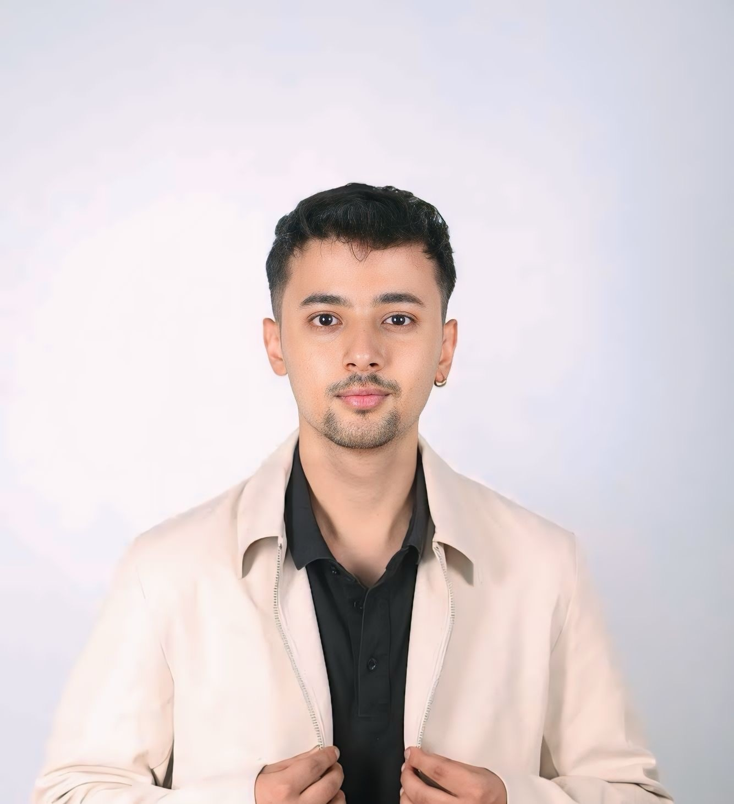

I'm Shishir Chaulagain.
Graduate Research Assistant | Civil Engineer | ML & Remote Sensing Enthusiast
Graduate Research Assistant | Civil Engineer | ML & Remote Sensing Enthusiast
I am currently pursuing a Master of Science in Civil Engineering at Purdue University with a focus on water resources engineering. I hold a Bachelor's degree in Civil Engineering from Tribhuvan University, Nepal, where I graduated with distinction.
As a Graduate Research Assistant at Merwade’s Research Lab, I am working on developing river bathymetry models using SWOT satellite data and analyzing culvert embedment parameters across Indiana’s waterways. Previously, I worked as a Civil Engineer at ERMC, where I led multidisciplinary teams and contributed to hydrological modeling and infrastructure planning.
My technical expertise includes programming, geospatial analysis, and hydrological modeling. I have published first-author papers in peer-reviewed journals such as Results in Engineering and Journal of Hazardous Materials Advances, with topics ranging from drought impact assessment to machine learning applications in water resource management.
I am passionate about applying advanced computational tools and satellite data to address environmental challenges, especially related to water resource sustainability and climate resilience.
My technical proficiency includes:

Predicts soil moisture across depths using ML and remote sensing data. From data download to spatial prediction, this pipeline fuses hydrology, satellite imagery, and data science magic.

A tutorial-based landslide segmentation project using U-Net on Sentinel satellite data. Includes NDVI, HDF5 preprocessing, TensorFlow implementation, and Google Colab support.

Utilizes SWOT satellite data to model river cross-sections and bathymetry. Applies geospatial techniques to extract elevation and width features for river analysis.

Awarded for Completion of CS50P python programming course offered by Harvard University and taught by David J. Malan.

Received merit-based scholarships for outstanding academic performance in the 5th and 7th semesters at Advanced College of Engineering and Management.

Completed Stanford's Supervised Machine Learning: Regression and Classification course taught by Andrew Ng.

Completed a comprehensive course on watershed delineation using ArcSWAT with ArcGIS by Udemy.

Successfully completed a hands-on course on 2D hydraulic modeling using HEC-RAS by Udemy.
For project inquiries or collaboration opportunities, please reach out to me via: